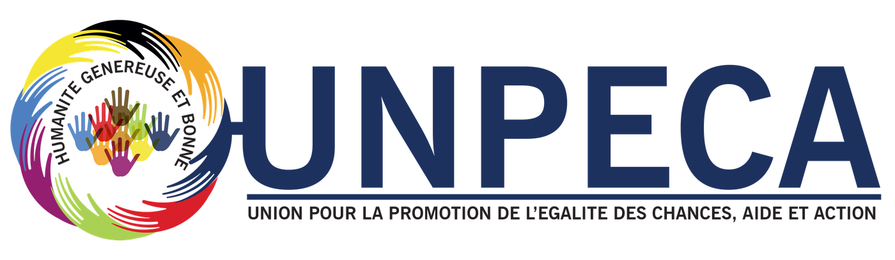

L'égalité des chances, pour que chacun vive et s'épanouisse dignement.Equal opportunities, so that everyone can live and flourish with dignity.
L'UNPECA est une association malienne à but non lucratif, apolitique et laïque. Elle œuvre dans les domaines humanitaire, social et du développement humain en faveur des populations vulnérables et défavorisées.
UNPECA is a Malian non-profit, non-political and secular association. It works in the humanitarian, social and human development fields for the benefit of vulnerable and disadvantaged populations.

du 03 septembre 2021of 3 September 2021
Association UNPECAUNPECA association
UNPECA est une association malienne à but non lucratif, apolitique et laïque, dénommée « Union pour la Promotion de l'Égalité des Chances, Aide et Action ». Elle œuvre dans les domaines humanitaire, social et du développement humain en faveur des populations vulnérables et défavorisées.
UNPECA is a Malian non-profit, non-political and secular association, named “Union pour la Promotion de l'Égalité des Chances, Aide et Action” (Union for the Promotion of Equal Opportunities, Aid and Action). It works in the humanitarian, social and human development fields for the benefit of vulnerable and disadvantaged populations.
Elle se consacre à l'amélioration durable des conditions de vie, à la réduction de la souffrance et à l'autosuffisance alimentaire et nutritionnelle. Le genre est un axe transversal de toutes ses actions.
It is dedicated to the lasting improvement of living conditions, the reduction of suffering and food and nutrition self-sufficiency. Gender is a cross-cutting axis of all its actions.
Humanité Généreuse et Bonne !Generous and Kind Humanity!
Notre visionOur vision
Promouvoir l'égalité des chances pour un monde meilleur dans lequel chaque être humain peut vivre et s'épanouir dignement.
To promote equal opportunities for a better world in which every human being can live and flourish with dignity.
Traiter chaque personne avec dignité et respectTreating every person with dignity and respect
Huit axes pour répondre ensemble aux défis du développementEight areas to tackle development challenges together
SantéHealth
Faciliter l'accès à l'information, à la prévention et aux soins pour les populations fragiles.
Facilitating access to information, prevention and care for vulnerable populations.
Alimentation, nutrition et agricultureFood, nutrition and agriculture
Contribuer à l'autosuffisance alimentaire et nutritionnelle et soutenir les producteurs.
Contributing to food and nutrition self-sufficiency and supporting producers.
Éducation et formationEducation and training
Offrir des chances d'apprendre, de se former et de progresser.
Offering chances to learn, train and progress.
Emploi et autonomisation économiqueEmployment and economic empowerment
Favoriser l'insertion économique et des revenus plus stables.
Fostering economic inclusion and more stable incomes.
Aide humanitaire et développement socialHumanitarian aid and social development
Répondre aux situations de précarité et réduire la souffrance des populations démunies.
Responding to situations of precarity and reducing the suffering of disadvantaged people.
Environnement et développement durableEnvironment and sustainable development
Protéger les ressources naturelles et aider les communautés à s'adapter au changement climatique.
Protecting natural resources and helping communities adapt to climate change.
Citoyenneté, migration et cohésion socialeCitizenship, migration and social cohesion
Renforcer les droits et la participation, et accompagner les personnes déplacées et migrantes.
Strengthening rights and participation, and supporting displaced and migrant people.
Culture, sport et médiasCulture, sport and media
Faire de l'art, du sport et de la communication des leviers d'épanouissement et de sensibilisation.
Making art, sport and communication levers of personal growth and awareness.
Une action sur tout le territoire nationalAction across the national territory
L'UNPECA intervient sur l'ensemble du territoire national malien, avec une vocation panafricaine.
UNPECA operates across Mali's national territory, with a pan-African outlook.
Dernières nouvellesLatest news
Agissons ensembleLet's act together
Partenaire, bénévole, donateur ou simple curieux : il y a une place pour vous à nos côtés.
Partner, volunteer, donor or simply curious: there is a place for you by our side.